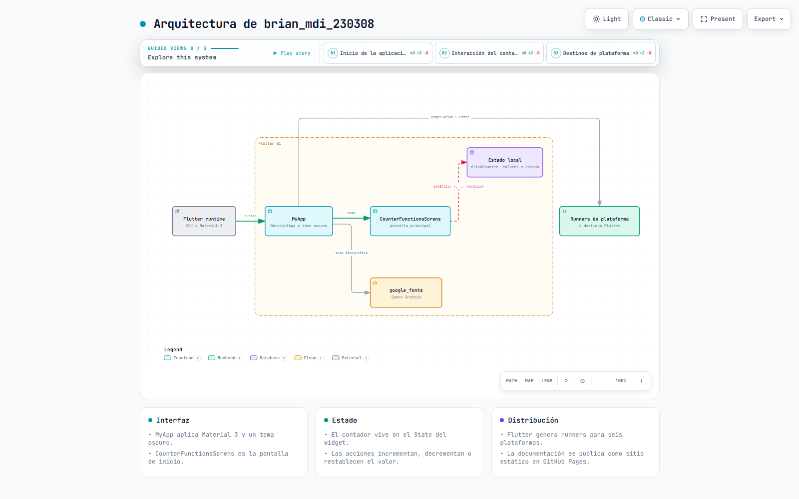
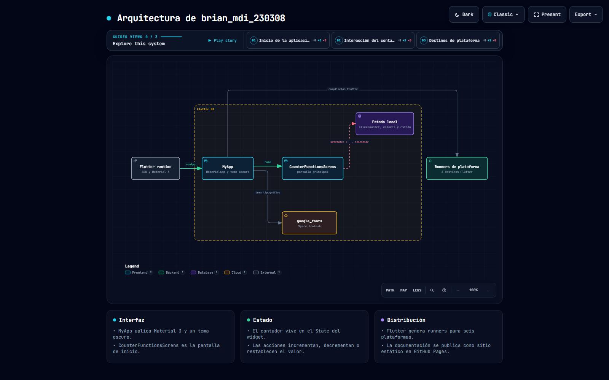

Desarrollo Móvil Integral
Brian Jesús Mendoza Márquez · Matrícula 230308 · Grado 9A · Prácticas con Flutter y Dart, con la documentación y los diagramas de arquitectura de cada una.
Práctica 02 · Arquitectura de la aplicación
Contador interactivo en Flutter con Material 3. MyApp configura el MaterialApp y selecciona CounterFunctionsScrens como pantalla inicial; esa pantalla es un widget con estado que posee el valor clickCounter y lo cambia con setState al sumar, restar o reiniciar. Los colores y el estado (LOW, MEDIUM, HIGH, NEGATIVE) se derivan del valor, y google_fonts aporta la tipografía Space Grotesk.


Los otros diagramas de la práctica: estructura del proyecto, interacción del contador y ciclo de vida de estados.
Práctica 03 · Hola Jarvis
Chat en Flutter con un asistente simulado que responde tras 1.5 s con un texto aleatorio y una imagen de reacción. Incluye el diagrama de la arquitectura propuesta por capas (Flutter, Keycloak, FastAPI, PostgreSQL, MongoDB y Docker Compose) y el de la arquitectura real del chat.


Keycloak, FastAPI, PostgreSQL y MongoDB son el diseño que piden los requisitos de la práctica y todavía no están implementados; lo que sí existe en el repositorio es la aplicación de chat en Flutter. La especificación está en arquitectura-practica03.md.
Repositorio: BR1ANJ3Sus3B/MDI-Brian-Jesus-230308 · README del repositorio. Los diagramas son HTML autónomos, con búsqueda, zoom y exportación, y funcionan también sin conexión.